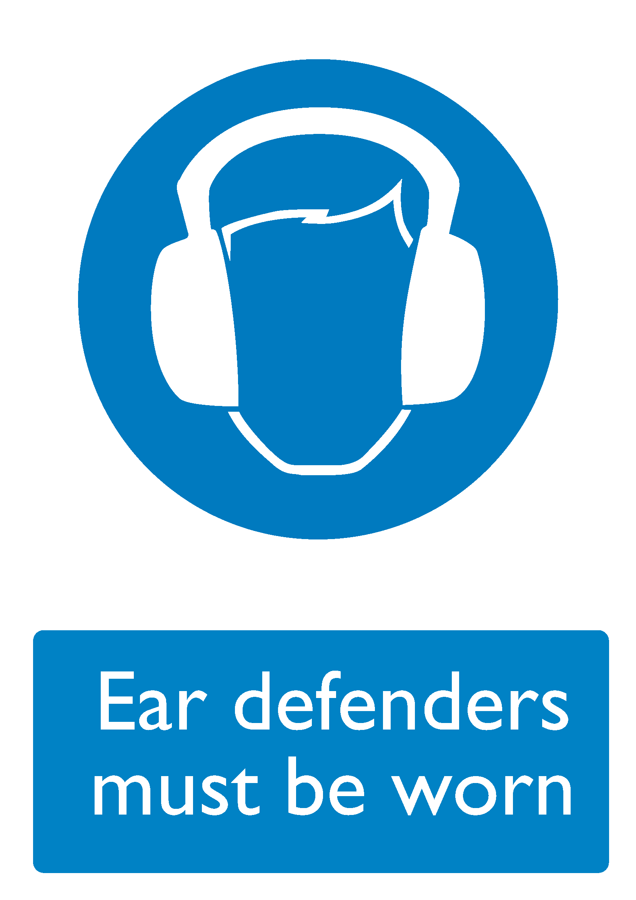

| Control ID | 11311 |
|---|---|
| Control Icon |  |
| Description |
Concern around noise is measured by a combination of sound level and duration of exposure, very high-level sounds are a hazard even with short duration. It is important to provide the right hearing protectors for the type of work, and make sure workers know how to fit them. Choose protectors that reduce noise to an acceptable level, while allowing for safety and communication. |
| Risk Assessments |
|
| Further Information |